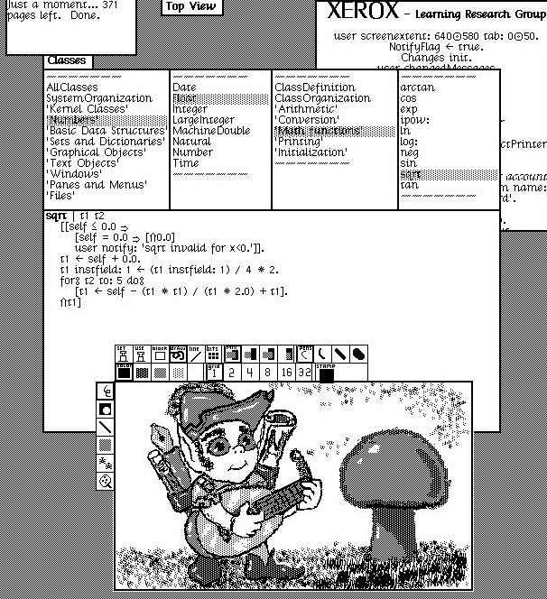

Topic 6: Object-Oriented Programming with Swift¶
1. Introduction to Object-Oriented Programming¶
Object-Oriented Programming (OOP) is a programming paradigm that became widespread in the 1980s, although its core ideas were born in the late 1960s and 1970s. For example, the first language with the basic ideas of OOP was Simula, a language created in the 1960s.
In the 1960s, programming was usually procedural. Programs were defined using abstract data types and functions, and modularization was carried out through functions.
As mentioned above, in the late 1960s the Simula language introduced the concept of a class: an abstraction that brings state and functions together in a single entity.

However, it took more than a decade, until the early 1980s, for the object-oriented paradigm to become popular. One of the main reasons for this popularization was the language Smalltalk, created at Xerox PARC and revolutionary in many ways. For example, Smalltalk introduced concepts such as graphical user interfaces (the use of the mouse and windows) and an integrated programming environment written in Smalltalk itself, which programmers could adapt and extend. The figure on the right shows an example of that environment, with a desktop containing multiple overlapping windows, drop-down menus, graphical panels, and so on.
Alan Kay was one of the fathers of Smalltalk, the creator of the term “Object-Oriented”, and one of the key figures in the history of modern computing. He worked at Xerox PARC, where he developed ideas that became crucial for personal computing, such as the Dynabook, a precursor to tablets and mobile devices, and the Smalltalk programming language.
You can get a sense of this achievement in his article “The Early History of Smalltalk”.
Some quotes from Alan Kay:
“I invented the term Object-Oriented and I can tell you I didn't have C++ in mind.”
“Smalltalk is not only NOT its syntax or the class library, it is not even about classes. I'm sorry that I long ago coined the term objects for this topic because it gets many people to focus on the lesser idea. “The big idea is messaging.”
“Smalltalk's design–and existence–is due to the insight that everything we can describe can be represented by the recursive composition of a single kind of behavioral building block that hides its combination of state and process inside itself and can be dealt with with only through the exchange of messages.”
In the 1980s, the object-oriented paradigm had an enormous impact and, from that point on, almost all languages adopted it. Languages such as Smalltalk, Java, Scala, Ruby, Python, C#, C++, and Swift use the object-oriented paradigm.
Among the main characteristics of the object-oriented programming paradigm, we can highlight:
- classes are static templates defined at compile time. Objects are instantiated from classes, and they are modified and interacted with at runtime.
- objects group internal state (the so-called properties, fields, or instance variables) and behavior (the methods to which the object can respond).
- There is polymorphism. The same method can be defined in more than one class. Depending on the type of the instance, the code that runs is different. For example, we could define a sum method in the Int class and another method with the same name in the String class. The first method adds two integers and the second concatenates two strings.
- In some object-oriented languages (such as Python or Ruby), method invocation is performed using dynamic dispatch: when an operation is invoked on an object, the object itself determines at runtime which code is executed.
- A fundamental characteristic of OOP is inheritance. Classes can be defined using other classes as templates, modifying their methods and/or instance variables to make them more specialized.
There are two orthogonal trends in the design of object-oriented languages.
On the one hand, one family of object-oriented languages is highly dynamic. These are weakly typed languages in which many features of programs are determined at runtime.
These languages allow greater code flexibility and generality, and they include features such as dynamic dispatch or reflection (the ability to inspect characteristics of an instance, such as method or property names, at runtime).
Examples of this kind of language are Smalltalk, Ruby, Python, JavaScript, and Java (to a lesser extent).
On the other hand, some object-oriented programming languages have a strong static component, where most program features are determined at compile time. In this kind of language, the compiler must be very robust, detect as many errors as possible in advance, and generate highly efficient code. These are strongly typed languages such as C++ or Swift.
Below we will describe the most important characteristics of Object-Oriented Programming in Swift.
2. Classes and Structures¶
In Swift, classes and structures are much closer in functionality than in other languages such as C or C++, and they have many features in common. Many features of class instances can also be applied to structure instances. This is why in Swift we usually talk about instances (a more general term) rather than objects.
Classes and structures in Swift have many things in common. Both can:
- Define properties to store values
- Define methods to provide functionality
- Define initializers to set up their initial state
- Be extended to expand their functionality beyond a default implementation
- Conform to a protocol
The fundamental difference is that structures are value types, while classes are reference types. Their copy semantics are radically different. When we assign a structure instance to a variable, we make a copy of its value (for example, just as when we assign an integer). However, when we assign a class instance to a variable, we store its reference. In this way, classes allow more than one reference to point to a single class instance.
Other additional features that classes have and structures do not:
- Through inheritance a class can inherit the characteristics of another
- Type casting allows you to check and interpret the type of an instance of a class at runtime
- Deinitializers allow an instance of a class to release the resources it has allocated
2.1. Definition¶
class UnaClase {
// definición de clase
}
struct UnaEstructura {
// definición de una estructura
}
struct CoordsPantalla {
var posX = 0
var posY = 0
}
class Ventana {
var esquina = CoordsPantalla()
var altura = 0
var anchura = 0
var visible = true
var etiqueta: String?
}
The example defines a new structure called CoordsPantalla, which
describes a screen coordinate with positions based on
pixels. The structure has two stored properties called
posX and posY. Properties are constants or variables that are
stored in the instance of the class or structure. The
compiler infers that these two properties are Int by
initialize them to initial values of 0.
The example also defines a new class called Ventana that
describes a window on a screen. This class has five
variable properties. The first, esquina, is initialized with a
new instance of a CoordsPantalla structure and it is inferred that it is
of type CoordsPantalla. It represents the top-left position of
the window. The altura and anchura properties represent the
number of pixels in the screen dimensions. They are initialized
to 0. The visible property is a Bool that indicates whether the window is
visible on screen. For example, a minimized window will not
be visible. Finally, etiqueta represents the name that appears
at the top of the window. It is an optional String that is
initialized to nil because it is not assigned an initial value.
2.2. Instances of Classes and Structures¶
The definitions of structures and classes only define their general aspects. To describe a specific configuration (a resolution or a specific video mode) it is necessary to create an instance of a structure or a class. The syntax to create both is similar:
var unasCoordsPantalla = CoordsPantalla()
var unaVentana = Ventana()
The simplest way of initialization is the above. It uses the name of the type of the class or structure followed by empty parentheses. This creates a new instance of a class or structure, with its properties initialized to the default values defined in the declaration of properties.
Swift provides this default initializer for classes and structures, as long as no initializer is defined explicitly. Later we will discuss how to define these explicit initializers.
In the case of the unasCoordsPantalla instance the values to which
its properties have been initialized are:
unasCoordsPantalla.posX // 0
unasCoordsPantalla.posY // 0
The properties of the unaVentana instance are:
unaVentana.esquina // CoordsPantalla con posX = 0 y posY = 0
unaVentana.altura // 0
unaVentana.anchura // 0
unaVentana.visible // true
unaVentana.etiqueta // nil
All properties of an instance must be defined after after being initialized, unless the property is optional.
2.3. Accessing Properties¶
Properties can be accessed and modified using the syntax. point:
// Accedemos a la propiedad
unasCoordsPantalla.posX // Devuelve 0
// Actualizamos la propiedad
unasCoordsPantalla.posX = 100
unaVentana.esquina.posY = 100
2.4. Memberwise Initialization of Structures¶
If explicit initializers are not defined in structures (we will see later how to do it) we can use a _memberwise_initializer in which we can provide values of your properties.
memberwise initializers do not exist in classes, only in classes structures.
For example, we can create an instance of the above structure with values other than the default values defined in the structure.
let coords = CoordsPantalla(posX: 200, posY: 400)
When calling the memberwise initializer we can skip values
of any property that has a default value, or that is a
optional. In the example above, the structure CoordsPantalla has
default values of the posX and posY properties. we could
omit either property or both and the initializer will use the value
by default of what we omit. For example:
let coords1 = CoordsPantalla(posX: 200)
print(coords1.posX, coords1.posY)
// Imprime 200 0
2.5. Structures and Enumerations Are Value Types¶
A value type is a type whose value is copied when assigned to a variable or constant, or when passed to a function.
All basic Swift types - integers, floating point numbers, strings, arrays and dictionaries - are value types and are implemented as structures. Structures and enums are value types in Swift.
1 2 3 4 | |
The example declares a constant called coords1 and assigns it to a
instance of CoordsPantalla initialized with x position of 600 and
the position y of 600. Then a variable called
coords2 and is assigned to the current value of coors1. Because CoordsPantalla
is a structure, a copy_ of the existing instance is created and
this new copy is assigned to coords2. Although now coords2 and coords1 have
the same posX and posY, are two completely
different. The posX property of coords2 is then updated to 1000.
We can verify that the property is modified, but that the value of
posX in coords1 remains the same.
2.6. Classes Are Reference Types¶
Unlike value types, reference types are not copied when assigned or passed to functions. Instead, a reference to the same existing instance.
In Swift classes are reference types. Let's see, for example, a
instance of class Ventana:
1 2 3 4 5 6 7 8 | |
We declare a variable called ventana1 initialized with a
new instance of the class Ventana. We assign to the property
esquina a copy of the previous resolution coords1. After
we declare the height, width and label of the window. And finally,
ventana1 is assigned to a new constant called ventana2, and the
width is modified.
Because they are reference types, ventana1 and ventana2 are
refer to the same instance of Ventana. It's just two names
different for the same single instance.
We can check this by modifying a property through a variable and seeing that that same property in the other variable has been modified also (lines 7 and 8).
If you have experience with C, C++, or Objective-C, you may know that These languages use pointers to refer to an address. memory. A constant or variable in Swift that refers to a instance of a reference type is similar to a pointer in C, but not is a pointer that points to a memory address and does not require An asterisk (*) is written to indicate that you are creating a reference. Instead, these references are defined as any another constant or variable in Swift.
2.7. Declaring instances with let¶
Structures and classes also have different behaviors
when variables are declared with let.
If we define with let an instance of a structure we are
declaring the variable and all the properties of the variable constant
instance. We will not be able to modify any:
let coords3 = CoordsPantalla(posX: 400, posY: 400)
coords3.posX = 800
// error: cannot assign to property: 'coords3' is a 'let' constant
If we define with a let an instance of a class we are only
declaring the variable constant. We will not be able to reassign it, but we can
we can modify the properties of the instance referenced by the
variable:
let ventana3 = Ventana()
// Sí que podemos modificar una propiedad de la instancia:
ventana3.etiqueta = "Listado"
// Pero no podemos reasignar la variable:
ventana3 = ventana1
// error: cannot assign to value: 'ventana3' is a 'let' constant
2.8. Identity Operators¶
Sometimes it can be useful to discover whether two constants or variables are refer to exactly the same instance of a class. To allow For this, Swift provides two identity operators:
- Identical to (
===) - Not identical to (
!==)
ventana1 === ventana2 // devuelve true
ventana1 === ventana3 // devuelve false
These "identical to" operators are not the same as the "equal to" operators.
(represented by two equal signs ==):
- "Identical to" means that two constants or variables of a class they refer to exactly the same instance of the class.
- "Equal" means that two instances are considered "equal" or "equivalent" in value. It is the responsibility of the designer of the class define the implementation of these operators.
2.9. Passing as Parameters¶
In Swift the parameters of functions are constants, they are defined
using the let operator. This makes it very different
behavior of a parameter depending on whether it is a structure or
a class
If the instance passed as a parameter to a function is a
structure its content cannot be modified. However, if what
is passed is an instance of a class, we can modify its
content, since (as we have seen above) the let does
only the reference is constant, but not the content.
For example, the following function is typical of imperative programming
or procedural. Parameter ventana is passed by reference and modified
inside the function. Your status changes. Once finished the
function the variable that we have passed as a parameter contains a
changed instance. We can do this because ventana is a class.
func mueve(ventana: Ventana, incX: Int, incY: Int) {
var nuevaPos = CoordsPantalla()
nuevaPos.posX = ventana.esquina.posX + incX
nuevaPos.posY = ventana.esquina.posY + incY
ventana.esquina = nuevaPos
}
var ventana1 = Ventana()
mueve(ventana: ventana1, incX: 500, incY: 500)
print(ventana1.esquina)
// Imprime: CoordsPantalla(posX: 500, posY: 500)
However, if we pass as a parameter an instance of a
structure, it will be immutable. The following code generates an error
in the compiler indicating that the parameter coordsPantalla is a
constant and cannot be modified:
// ¡¡CÓDIGO ERRÓNEO!!
func mueve(coordsPantalla: CoordsPantalla, incX: Int, incY: Int) {
coordsPantalla.posX = coordsPantalla.posX + incX
coordsPantalla.posY = coordsPantalla.posY + incY
}
// error: cannot assign to property: 'coordsPantalla' is a 'let' constant
If we need to make a function that obtains a value modified from a structure, we can use the functional approach of create a new structure and return it as a result:
func mueve(coordsPantalla: CoordsPantalla, incX: Int, incY: Int) -> CoordsPantalla {
var nuevaCoord = CoordsPantalla()
nuevaCoord.posX = coordsPantalla.posX + incX
nuevaCoord.posY = coordsPantalla.posY + incY
return nuevaCoord
}
let coord1 = CoordsPantalla()
let coord2 = mueve(coordsPantalla: coord1, incX: 100, incY: 100)
print(coord1)
// Imprime CoordsPantalla(posX: 100, posY: 100)
We see in the code that a new instance is created and modified its value in accordance with what the function wants to do and that returns that new value.
Using this last function we could rewrite the code of the function that moves a window in the following way:
func mueve(ventana: Ventana, incX: Int, incY: Int) {
ventana.esquina = mueve(coordsPantalla: ventana.esquina,
incX: incX, incY: incY)
}
Note
Just like in C, in Swift there is a way to pass as a reference a
structure. You must use the operator inout preceding the
parameter name. You can find more information in the
official Swift documentation. Look for the In-Out section
paremeters on the about page
Functions.
2.10. Criteria for Using Structures and Classes¶
We can use both classes and structures to define our types of data and use them as building blocks of code. our programs. However, they are used for different types of tasks.
As a general rule, we will use a structure when a or more of the following conditions:
- The main objective of the structure is to encapsulate a few relatively simple data.
- It is reasonable to expect that the encapsulated values will be copied, rather than referenced, when we assign or pass an instance of that structure.
- All properties stored in the structure are in turn value types, which are also expected to be copied more than referenced.
- The structure does not need to inherit properties or behavior from another existing type.
Examples of good structure candidates include:
- The size of a geometric shape, encapsulating for example the
anchoandaltoproperties of typeDouble. - A way of referring to ranges within a series, encapsulating
for example, a property
comienzoand anotherlongitud, both of the typeInt. - A point in a 3D coordinate system, perhaps encapsulating the
x,yandzproperties, all of typeDouble.
We will use classes when we want to use reference semantics instead of value semantics. For example, if we want to have a graph of objects in which more than one object refers to another. Also when we want to use inheritance and polymorphism in our code.
In practice, this means that most of the data we will build in our programs they will be classes, not structures. Although we will use many of the standard structures of Swift.
3. Properties¶
properties associate values with a particular class, structure, or enumeration. Stored properties (stored properties) store constant and variable values as part of an instance, while computed properties (computed properties) calculate a value instead of storing it. Computed properties can be defined in classes, structures, and enumerations. Stored properties can be defined only in classes and structures.
- Enumerations: can contain only computed properties.
- Classes and structures: can contain stored and computed properties.
Stored and computed properties are usually associated with instances of a particular type. However, properties can also be associated with the type itself. These are known as type properties (type properties).
In addition, Swift lets us define property observers to monitor changes in the values of a property and respond with programmed actions. Property observers can be added both to stored properties we define ourselves and to inherited properties from a superclass.
3.1. Stored Properties¶
In its simplest form, a stored property is a constant or variable that is stored
as part of an instance of a particular class or structure. Stored properties can
be variables (using the keyword var) or constants (using the keyword let).
We can provide a default value for initializing stored properties, whether they
are variables or constants. The following example defines a structure called
RangoLongitudFija, which describes a range of integer values whose length
cannot be changed once it is created:
struct RangoLongitudFija {
var primerValor: Int
let longitud: Int
}
var rangoTresItems = RangoLongitudFija(primerValor: 0,
longitud: 3)
// el rango representa ahora 0, 1, 2
rangoTresItems.primerValor = 6
// el rango representa ahora 6, 7, 8
Instances of RangoLongitudFija have a variable stored property called
primerValor and a constant stored property called longitud. In the example,
longitud is initialized when the new range is created and can't be changed
later because it is a constant property.
3.2. Computed Properties¶
In addition to stored properties, classes, structures, and enumerations can define computed properties, which don't actually store a value. Instead, they provide a getter and an optional setter to retrieve and set other properties and values indirectly.
struct Punto {
var x = 0.0, y = 0.0
}
struct Tamaño {
var ancho = 0.0, alto = 0.0
}
struct Rectangulo {
var origen = Punto()
var tamaño = Tamaño()
var centro: Punto {
get {
let centroX = origen.x + (tamaño.ancho / 2)
let centroY = origen.y + (tamaño.alto / 2)
return Punto(x: centroX, y: centroY)
}
set(centroNuevo) {
origen.x = centroNuevo.x - (tamaño.ancho / 2)
origen.y = centroNuevo.y - (tamaño.alto / 2)
}
}
}
var cuadrado = Rectangulo(origen: Punto(x: 0.0, y: 0.0),
tamaño: Tamaño(ancho: 10.0, alto: 10.0))
let centroCuadradoInicial = cuadrado.centro
cuadrado.centro = Punto(x: 15.0, y: 15.0)
print("cuadrado.origen está ahora en (\(cuadrado.origen.x), \(cuadrado.origen.y))")
// Imprime "cuadrado.origen está ahora en (10.0, 10.0)"
This example defines three structures for working with geometric shapes:
Puntoencapsulates an(x, y)coordinate.Tamañoencapsulates a width and a height.Rectangulodefines a rectangle using an origin point and a size.
The Rectangulo structure provides a computed property called centro. The
current position of a Rectangulo’s center can always be determined from its
origin and its size, so we don't need to store it as an explicit Punto.
Instead, Rectangulo defines a getter and a setter for the computed
property centro, allowing us to work with the rectangle’s center as if it were
a stored property.
The example creates a Rectangulo variable called cuadrado. The variable
cuadrado has an origin point of (0, 0) and a width and height of 10. This
square is represented by the blue square in the diagram below.
We then access the centro property of the variable cuadrado using dot syntax
(cuadrado.centro), which calls the getter of centro to return the
property's current value. Instead of returning stored values, the getter
calculates and returns a new Punto to represent the center of the square. As
shown above, the getter correctly returns a point with the values (5, 5).
The center property is then updated to the new value (15, 15), which moves the
square up and to the right, to the new position shown by the orange square in
the diagram below. When the new value is assigned to the property, the centro
setter is called. It modifies the x and y values of the original stored
properties and moves the square to its new position.

A shortened version of the setter can be defined using the default variable
newValue, which contains the new value assigned in the setter:
struct Rectangulo {
var origen = Punto()
var tamaño = Tamaño()
var centro: Punto {
get {
let centroX = origen.x + (tamaño.ancho / 2)
let centroY = origen.y + (tamaño.alto / 2)
return Punto(x: centroX, y: centroY)
}
set {
origen.x = newValue.x - (tamaño.ancho / 2)
origen.y = newValue.y - (tamaño.alto / 2)
}
}
}
3.3. Read-Only Computed Properties¶
A computed property with a getter but no setter is known as a read-only computed property. A read-only computed property always returns a value and can be accessed using dot syntax, but it can't be set to a different value.
It is possible to simplify the declaration of a read-only computed property by
removing the get keyword and its braces:
struct Cuboide {
var ancho = 0.0, alto = 0.0, profundo = 0.0
var volumen: Double {
return ancho * alto * profundo
}
}
let cuatroPorCincoPorDos = Cuboide(ancho: 4.0, alto: 5.0,
profundo: 2.0)
print("el volumen de cuatroPorCincoPorDos es \(cuatroPorCincoPorDos.volumen)")
// Imprime "el volumen de cuatroPorCincoPorDos es 40.0"
This example defines a new structure called Cuboide, which
represents a 3D rectangular box with properties ancho, alto and
profundo. This structure has a computed property called
volumen, which calculates and returns the current volume of the cuboid. It would not make sense for the volume to be modifiable, because it would be
ambiguous to determine what specific width, height, and depth values
should be used for a particular value of volume.
3.4. Property Observers¶
Property observers observe and respond to changes in the value of a property. The observers of properties are called whenever the value of a property is updated, even if the new value is the same as the current value of the property.
Observers can be added to any stored property that is define Observers can also be added to any property inherited (either stored or computed) by overriding the property in the subclass. No need to define property observers computed not overridden because it is always possible to observe and respond to changes in its value in the property's setter.
It is possible to define one or both of these observers on a property:
willSetis called just before the new value is stored on the property.didSetis called immediately after the new value is stored on the property.
If we implement an observer willSet, the new value of
the property as a constant parameter. We can specify a
name for this parameter as part of the implementation of
willSet. If we do not write the name of the parameter and the parentheses
within the implementation, the parameter will be available with the
default name of newValue.
Similarly, if we implement an observer didSet, we pass
as a constant parameter containing the old value of the
property. We can name the parameter or use the name by
default of oldValue. If we assign a value to the property within
its own observer didSet, the new value we assign replaces
the one that was just added to the property.
Below we can see an example of willSet and didSet in
action. In it we define a new class called CuentaPasos, which
tracks the total number of steps a person takes
walk. This class can be used with input data from a
pedometer or any other system for tracking exercise
person during their daily routine.
class ContadorPasos {
var totalPasos: Int = 0 {
willSet(nuevoTotalPasos) {
print("Voy a actualizar totalPasos a \(nuevoTotalPasos)")
}
didSet {
if totalPasos > oldValue {
print("Añadidos \(totalPasos - oldValue) pasos")
}
}
}
}
let contadorPasos = ContadorPasos()
contadorPasos.totalPasos = 200
// Imprime: "Voy a actualizar totalPasos a 200"
// Imprime: "Añadidos 200 pasos"
contadorPasos.totalPasos = 360
// Imprime: "Voy a actualizar totalPasos a 360"
// Imprime: "Añadidos 160 pasos"
contadorPasos.totalPasos = 896
// Imprime: "Voy a actualizar totalPasos a 896"
// Imprime: "Añadidos 536 pasos"
The class CuentaPasos declares the property totalPasos of type
Int. This is a stored property with observers willSet and
didSet.
The observers willSet and didSet of totalPasos are called
whenever a new value is assigned to the property. This is so
even if the new value is the same as the current value.
The observer willSet uses a parameter defined by us with the
nuevoTotalPasos name for the arriving value. In the example,
it simply prints the value you are about to set.
The observer didSet is called after the value of
totalPasos has been updated. Compare the new value of totalPasos
with the old value. If the total number of steps has increased,
A message is printed indicating how many steps have been taken. The
observer didSet does not provide a parameter defined by us
for the old value, but uses the default name oldValue.We can even use the observer didSet to prevent them from being left
in the properties unwanted values. For example, we could avoid
that negative values are assigned to the total steps:
class ContadorPasos {
var totalPasos: Int = 0 {
willSet(nuevoTotalPasos) {
if nuevoTotalPasos > 0 {
print("Voy a actualizar totalPasos a \(nuevoTotalPasos)")
}
}
didSet {
if totalPasos < 0 {
totalPasos = oldValue
}
if totalPasos > oldValue {
print("Añadidos \(totalPasos - oldValue) pasos")
}
}
}
}
let contadorPasos = ContadorPasos()
contadorPasos.totalPasos = 200
// Imprime: "Voy a actualizar totalPasos a 200"
// Imprime: "Añadidos 200 pasos"
contadorPasos.totalPasos = -10 // No imprime nada
contadorPasos.totalPasos // devuelve 200, el valor antiguo
Note that when assigning totalSteps =
oldValue dentro del didSet no se vuelve a lanzar el willSet.
3.5. Local and Global Variables¶
The above capabilities of computed properties and observers are also available for global and local variables.
The following example shows an example with a variable computed at from two others:
var x = 10 {
didSet {
print("El nuevo valor: \(x) y el valor antiguo: \(oldValue)")
}
}
var y = 2 * x
var z : Int {
get {
return x + y
}
set {
x = newValue / 2
y = newValue / 2
}
}
print(z)
z = 100
print(x)
3.6. Type Properties¶
Instance properties are properties that belong to an instance of a particular type. Every time we create a new instance of that type, it has its own set of property values, separate from the values of any other instance.
We can also define properties that belong to the type itself, rather than to any instance of that type. There is only one copy of these properties, regardless of the number of instances of that type we create. These properties are called type properties (type properties). They can be defined on structures, classes, and enumerations.
Type properties are useful for defining values that are universal to all instances of a particular type, such as a constant property that all instances can use (like a static constant in C), or a variable property that stores a value that is global to all instances of that type (like a static variable in C).
Stored type properties can be variables or constants. Computed type properties are always declared as variable properties, in the same way as computed instance properties.
Unlike stored instance properties, stored type properties must always be given a default value. This is because the type itself doesn't have an initializer that can assign a value at initialization time.
In Swift, type properties are defined as part of the type definition, inside the
type's braces. Type properties take their value in the scope of the type. To
define a type property, use the keyword static. For computed type properties
on classes, we can use the keyword class instead, to allow subclasses to
override the superclass implementation.
Type properties can also be constants (let) or variables (var).
Example:
struct UnaEstructura {
static var almacenada = "A"
static var calculada : Int {
return 1
}
}
enum UnaEnumeracion {
static var almacenada = "A"
static var calculada: Int {
return 1
}
}
class UnaClase {
static var almacenada = "A"
static var calculada: Int {
return 1
}
}
The type properties are queried and updated using the point syntax, but about the type:
UnaEstructura.almacenada // devuelve "A"
UnaEstructura.almacenada = "B"
UnaClase.calculada // devuelve 1
It is not possible to access the type variable through an instance:
let a = UnaEstructura()
a.almacenada // error
The following example shows how it is possible to use a variable of the type to store information global to all instances of that type:
struct Valor {
var valor: Int = 0 {
didSet {
Valor.sumaValores += valor
}
}
static var sumaValores = 0
}
var c1 = Valor()
var c2 = Valor()
var c3 = Valor()
c1.valor = 10
c2.valor = 20
c3.valor = 30
print("Suma de los cambios de valores: \(Valor.sumaValores)")
// Imprime 60
4. Methods¶
methods are functions that are associated with a type particular. Classes, structures, and enumerations can define all of them instance methods, which encapsulate tasks and specific functionalities that work with an instance of a type given. Classes, structures, and enumerations can also define type methods, which are associated with the type itself. The methods of type are similar to class methods in Java.The fact that structures and enumerations can define methods in Swift is an important difference from C and Objective-C.
4.1. Instance Methods¶
Instance methods are functions that belong to instances of a class, structure, or enumeration. They provide the functionality of those instances, either by providing ways to access and modify properties of the instances, or providing functionalities related to the purpose of the instance. The methods of instance have exactly the same syntax as functions.
Instance methods are written inside the curly braces of the type that belong. An instance method has implicit access to all the other instance methods and type properties. A method of instance can be invoked only on a specific instance of the type to which it belongs. It cannot be invoked in isolation without a existing instance.
Below we can see an example that defines a simple class
Contador, which can be used to count the number of times it happens
an action:
class Contador {
var veces = 0
func incrementa() {
veces += 1
}
func incrementa(en cantidad: Int) {
veces += cantidad
}
func reset() {
veces = 0
}
}
And an example of use:
let contador = Contador()
// el valor inicial del contador es 0
contador.incrementa()
// el valor del contador es ahora 1
contador.incrementa(en: 5)
// el valor del contador es ahora 6
contador.reset()
// el valor del contador es ahora 0
In the example above, the methods do not return any value. We can modify the example so that the methods return the updated value of the counter:
class Contador {
var veces = 0
func incrementa() -> Int {
veces += 1
return veces
}
func incrementa(en cantidad: Int) -> Int {
veces += cantidad
return veces
}
func reset() -> Int {
veces = 0
return veces
}
}
4.2. Local and External Parameter Names¶
We already saw that function parameters can have a name internal and an external name. The same thing happens with the methods, because Methods are nothing more than functions associated with a type.
Method names in Swift typically refer to the first
parameter using a preposition such as con, en, a or por, such as
we have seen in the previous example incrementa(en:). The use of the
preposition allows the method to be read as a phrase.
The name of a parameter is also used as the label of the
argument (external name). As with functions, it is possible
define two parameter names, one external and one internal. and he
external name can be _ to indicate that it is not necessary to use
the argument tag.
This way of invoking methods makes the language more expressive, without the need for long method or function names.
Consider for example this alternative version of the class
Contador, which defines a more complex form of the method
incrementa(en:):
class Contador {
var veces = 0
func incrementa(en cantidad: Int, numeroDeVeces: Int) {
veces += cantidad * numeroDeVeces
}
}
The incrementa(en:numeroDeVeces:) method has two parameters:
cantidad and numeroDeVeces. The first parameter has a name
external and another internal. In the body of the method the name is used
internal (cantidad). The second parameter numeroDeVeces is both
external name as internal. We can call the method as follows
shape:
let contador = Contador()
contador.incrementa(en: 5, numeroDeVeces: 3)
// el valor del contador es ahora 15
As with functions, we can explicitly define the
external names of the parameters and use the underscore (_) to
indicate that this parameter will not have an external name.
4.3. The self Property¶
Every instance of a type has an implicit property called
self, which is exactly equivalent to the instance itself. we can
use the self property to refer to the current instance within
of its own instance methods.
The incrementa() method in the example above could have been written
in this way:
class Contador {
var veces = 0
func incrementa() {
self.veces += 1
}
}
In practice it is almost never necessary to use self. Swift assumes that
any reference to a property within a method refers to
the property of the instance. It is obligatory to use it when the name
of the property matches the name of a parameter. In this
situation the parameter name takes precedence and it is necessary to use
self to be able to refer to the instance property.
An example:
struct Punto {
var x = 0.0, y = 0.0
func estaAlaDerecha(de x: Double) -> Bool {
return self.x > x
}
}
let unPunto = Punto(x: 4.0, y: 5.0)
if unPunto.estaAlaDerecha(de: 1.0) {
print("Este punto está a la derecha de la línea donde x == 1.0")
}
// Imprime "Este punto está a la derecha de la línea donde x == 1.0"
4.4. Operations with Value-Type Instances¶
Structures and enums are value types. By default, The properties of a value type cannot be modified from inside the instance methods.
If we want to modify a property of a value type, the most The natural way to do this is to create a new instance, using the functional programming:
struct Punto {
var x = 0.0, y = 0.0
func incrementado(incX: Double, incY: Double) -> Punto {
return Punto(x: x+incX, y: y+incY)
}
}
let unPunto = Punto(x: 1.0, y: 1.0)
var puntoMovido = unPunto.incrementado(incX: 2.0, incY: 3.0)
print("Hemos movido el punto a (\(puntoMovido.x), \(puntoMovido.y))")
// Imprime "Hemos movido el punto a (3.0, 4.0)"
Note
The Swift standard library uses the naming convention.
non-mutating methods (that return a new object) with the verb
in participle (array.sorted()) and the mutating methods (which
they modify the structure itself and do not return anything) with the verb
in imperative (array.sort()).
4.5. Modifying Value Types from Within Instance Methods¶
However, there are times when we need to modify the properties of our structure or enum within a method particular.
We can achieve this behavior by placing the keyword mutating
before the word func of the method:
struct Punto {
var x = 0.0, y = 0.0
mutating func incrementa(incX: Double, incY: Double) {
x += incX
y += incY
}
}
var unPunto = Punto(x: 1.0, y: 1.0)
unPunto.incrementa(incX: 2.0, incY: 3.0)
print("El punto está ahora en (\(unPunto.x), \(unPunto.y))")
// Imprime "El punto está ahora en (3.0, 4.0)"
The method now has mutating behavior: it can mutate instance properties.
Specifically, the mutating method incrementa(incX:incY:) moves an instance of
Punto by a certain amount. Instead of returning a new point, the method
modifies the point on which it is called. The keyword mutating is added to its
definition to allow it to modify its properties.
Note that it is not possible to call a mutating method on a constant of a structure type, because its properties cannot change, even if they are variable properties:
let puntoFijo = Punto(x: 3.0, y: 3.0)
puntoFijo.incrementa(incX: 2.0, incY: 3.0)
// esto provocará un error
4.6. Assignment to self in a Mutating Method¶
Mutating methods can assign an entirely new instance to self. The previous
Punto example could have been written as follows:
struct Punto {
var x = 0.0, y = 0.0
mutating func incrementa(incX: Double, incY: Double) {
self = Punto(x: x + incX, y: y + incY)
}
}
This version of the incrementa(incX:incY:) mutating method creates a new
structure whose x and y values are initialized to the desired values. The
final result of calling this alternative version is exactly the same as calling
the previous version, although with a small efficiency penalty: this method is
1.3 times slower than the previous one in version 2.2 of the Swift compiler.
Mutating methods in enumerations can set the implicit self parameter to a
different case of the same enumeration:
enum InterruptorTriEstado {
case apagado, medio, alto
mutating func siguiente() {
switch self {
case .apagado:
self = .medio
case .medio:
self = .alto
case .alto:
self = .apagado
}
}
}
var luzHorno = InterruptorTriEstado.medio
luzHorno.siguiente()
// luzHorno es ahora .alto
luzHorno.siguiente()
// luzHorno es ahora .apagado
4.7. Type Methods¶
Instance methods, such as those described above, are called in
instances of a particular type. It is also possible to define methods
which are called in the type itself. These kinds of methods are called
type methods. A type method is defined by writing the
keyword static before the keyword func of the
method. Classes can also use the class keyword to
allow subclasses to override the method implementation.
Type methods are also invoked with dot syntax, typing the type name. For example:
class NuevaClase {
static func unMetodoDelTipo() {
print("Hola desde el tipo")
}
}
NuevaClase.unMetodoDelTipo()
Within the method body, the implicit property self refers
to the type itself, rather than to an instance of that type. For classes,
structures and enums, this means you can use self
to disambiguate between type properties and the parameters of the
method, in the same way as is done in instance methods.
Any method or property name used in the body of a method of type will refer to other level properties or methods of the type. You can use these names without adding the prefix of the type name.
For example, we can add a property to the class Ventana
and class method with which to store window instances. Initially
we save an empty array.
class Ventana {
// Propiedades
static var ventanas: [Ventana] = []
static func registrar(ventana: Ventana) {
ventanas.append(ventana)
}
}
Every time we create a window we can call the registrar method
of the class to add it to the class's window collection:
let v1 = Ventana()
Ventana.registrar(ventana: v1)
print("Se han registrado \(Ventana.ventanas.count) ventanas")
// Imprime "Se han registrado 1 ventanas"
5. Initialization¶
Initialization is the process of preparing an instance for use of a class, structure or enumeration. This process includes the assigning an initial value for each stored property and execution of any other initialization operation that is need to get the new instance ready to use.
To implement this initialization process you must define initializers, which are like special methods that can be called to create a new instance of a particular type. Unlike other languages, initializers in Swift do not return a value. Its main role is that new instances of the type are correctly initialized before they can be used for the first time.
It is also possible to implement deinitializers, methods that are executed when the instances are removed from memory (we are not going to explain them due to lack of time).
The process of initializing an instance can be a complicated process, especially when there are inheritance relationships and you must also specify how to initialize the subclass using the superclass. Due to lack of time we are not going to explain the entire complete process. We recommend consulting the Swift original documentation.
5.1. Default and memberwise Initializers¶
We have already seen that it is possible to initialize classes and structures defining default values for all its properties (with the possible exception of those with an optional type). In that case, we can not define no initializer and use the default initializer that Swift provides.
struct Punto2D {
var x = 0.0
var y = 0.0
}
class Segmento {
var p1 = Punto2D()
var p2 = Punto2D()
}
var s = Segmento()
It is also possible in structures to use the initializer memberwise, in which we specify all the values of the properties:
var p = Punto2D(x: 10.0, y: 10.0)
The default and memberwise initializers disappear in the
moment when we define some initializer with the word
init. Let's see how to define initializers.
5.2. Initialization of Stored Properties¶
As we have said, classes and structures must define all their
properties stored at an initial value at the time the
instance is created, unless these are optional, in which case
would be initialized to nil.
We can define the initial value for a property in a initializer or assigning it a default value as part of the property definition.
An initializer, in its simplest form is written with the word
init key:
init() {
// realizar alguna inicialización aquí
}
For example, we can define the structure Farenheit that stores
a temperature in degrees Fahrenheit. Has a stored property of
type Double. We define an initializer that initializes the
instances at 32.0 (equivalent to 0.0 degrees Celsius).
struct Fahrenheit {
var temperatura: Double
init() {
temperatura = 32.0
}
}
var f = Fahrenheit()
print("La temperatura por defecto es \(f.temperatura) Fahrenheit")
// Imprime "La temperatura por defecto es 32.0° Fahrenheit"
The previous implementation is equivalent to the one we have already seen with the default initializer:
struct Fahrenheit {
var temperatura = 32.0
}
5.3. Custom Initializers¶
We can provide initialization parameters as part of the definition of an initializer, to define types and names of the values that customize the initialization process. The Initialization parameters have the same capabilities and syntax than the parameters of functions and methods.
struct Celsius {
var temperaturaEnCelsius: Double
init(desdeFahrenheit fahrenheit: Double) {
temperaturaEnCelsius = (fahrenheit - 32.0) / 1.8
}
init(desdeKelvin kelvin: Double) {
temperaturaEnCelsius = kelvin - 273.15
}
}
let puntoDeEbullicionDelAgua = Celsius(desdeFahrenheit: 212.0)
// puntoDeEbullicionDelAgua.temperaturaEnCelsius es 100.0
let puntoDeCongelacionDelAgua = Celsius(desdeKelvin: 273.15)
// puntoDeCongelacionDelAgua.temperaturaEnCelsius is 0.0
We see that depending on the parameter name provided, we choose one initializer or another. In the initializers it is mandatory provide the names of all parameters:
struct Color {
let rojo, verde, azul: Double
init(rojo: Double, verde: Double, azul: Double) {
self.rojo = rojo
self.verde = verde
self.azul = azul
}
init(blanco: Double) {
rojo = blanco
verde = blanco
azul = blanco
}
}
let magenta = Color(rojo: 1.0, verde: 0.0, azul: 1.0)
let medioGris = Color(blanco: 0.5)
We can avoid providing external names by using an underscore. By
For example, we can add an initializer to the previous struct Celsius
without external name for the case in which we pass the initial temperature
precisely in Celsius:
struct Celsius {
var temperaturaEnCelsius: Double
init(desdeFahrenheit fahrenheit: Double) {
temperaturaEnCelsius = (fahrenheit - 32.0) / 1.8
}
init(desdeKelvin kelvin: Double) {
temperaturaEnCelsius = kelvin - 273.15
}
init(_ celsius: Double) {
temperaturaEnCelsius = celsius
}
}
let temperaturaCuerpo = Celsius(37.0)
// temperaturaCuerpo.temperaturaEnCelsius es 37.0
Finally, it is possible to initialize defined constant properties
with let. They only take value at initialization time and
Afterwards they cannot be modified.
class PreguntaEncuesta {
let texto: String
var respuesta: String?
init(texto: String) {
self.texto = texto
}
func pregunta() {
print(texto)
}
}
let preguntaQueso = PreguntaEncuesta(texto: "¿Te gusta el queso?")
preguntaQueso.pregunta() // -> "¿Te gusta el queso?"
preguntaQueso.respuesta // -> nil
The respuesta property is initialized to nil as it is optional and not
initialize it in the initializer.
Finally, it is possible to define more than one initializer, as well as invoke more basic initializers from others.
struct Rectangulo {
var origen = Punto()
var tamaño = Tamaño()
init(){}
init(origen: Punto, tamaño: Tamaño) {
self.origen = origen
self.tamaño = tamaño
}
init(centro: Punto, tamaño: Tamaño) {
let origenX = centro.x - (tamaño.ancho / 2)
let origenY = centro.y - (tamaño.ancho / 2)
self.init(origen: Punto(x: origenX, y: origenY), tamaño: tamaño)
}
}
let basicRectangulo = Rectangulo()
// el origen de basicRectangulo es (0.0, 0.0) y su tamaño (0.0, 0.0)
let origenRectangulo = Rectangulo(origen: Punto(x: 2.0, y: 2.0),
tamaño: Tamaño(ancho: 5.0, alto: 5.0))
// el origen de origenRectangulo es (2.0, 2.0) y su tamaño (5.0, 5.0)
let centroRectangulo = Rectangulo(centro: Punto(x: 4.0, y: 4.0),
tamaño: Tamaño(ancho: 3.0, alto: 3.0))
// el origen de centroRectangulo es (2.5, 2.5) y su tamaño (3.0, 3.0)
The init(){} initializer allows you to initialize the Rectangulo to the
default values defined in the properties. Provides the same
functionality than the default initializer, which as we have
commented, it is not created in a structure or class in which we define
their own initializers.
6. Inheritance¶
A class can inherit methods, properties, and other characteristics from another class. When one class inherits from another, the inheriting class is called a subclass, and the class it inherits from is called its superclass. Inheritance is a fundamental behavior that differentiates classes from other types in Swift.
Swift classes can call and access methods and properties that belong to their superclass, and they can provide their own versions that override those methods and properties. To override a method or a property, the override must conform to the definition provided by the superclass.
Classes can also add observers to inherited properties, so they are notified when the value of an inherited property changes. A property observer can be added to any inherited property, regardless of whether it was originally stored or computed.
6.1. Defining a Base Class¶
A class that does not inherit from any other class is called a base class. Unlike some other object-oriented languages, Swift classes do not inherit from a universal base class.
Also unlike some other object-oriented languages, Swift does not allow abstract
classes whose instances cannot be created. Any class in Swift can be
instantiated. The following example defines a base class called Vehiculo. This
base class defines a stored property called velocidadActual, with a default
value of 0.0. This property is used by a computed String property called
descripcion, which creates a description of the vehicle.
The base class Vehiculo also defines a method called hazRuido. This method
doesn't really do anything for an arbitrary base vehicle, but it will be
customized later by subclasses of Vehiculo.
class Vehiculo {
var velocidadActual = 0.0
var descripcion: String {
return "viajando a \(velocidadActual) kilómetros por hora"
}
func hazRuido() -> String {
// Devuelve una cadena vacía - un vehículo arbitrario no hace
// ruido necesariamente
return ""
}
}
We create a new instance of Vehiculo using the initialization syntax we have
already seen, with the name of the class type followed by empty parentheses:
let unVehiculo = Vehiculo()
After creating a new instance of Vehiculo, we can access its description:
print("Vehículo: \(unVehiculo.descripcion)")
// Vehículo: viajando a 0.0 kilómetros por hora
The Vehiculo class defines common characteristics for an arbitrary vehicle,
but it is not very useful by itself. To make it more useful, we need to refine
it to describe more specific kinds of vehicles.
6.2. Building Subclasses¶
Subclassing is the act of basing a new class on an existing class. The subclass inherits characteristics from the existing class, which we can then refine. We can also add new features to the subclass.
To indicate that a subclass has a superclass, write the name of the subclass
before the name of the superclass, separated by a colon (:):
class UnaSubclase: UnaSuperClase {
// definición de la subclase
}
In the previous Vehiculo example, we can define a Bicicleta subclass:
class Bicicleta: Vehiculo {
var tieneCesta = false
}
The new Bicicleta class automatically obtains all the characteristics of
Vehiculo, such as its velocidadActual and descripcion properties and its
hazRuido() method.
In addition to the characteristics it inherits, the Bicicleta class defines a
new stored property, tieneCesta, with a default value of false.
By default, any new instance of Bicicleta will not have a basket. You can set
the tieneCesta property to true for a particular instance of Bicicleta
after creating it:
let bicicleta = Bicicleta()
bicicleta.tieneCesta = true
We can also modify the inherited property velocidadActual and query the
descripcion property:
bicicleta.velocidadActual = 10.0
print("Bicicleta: \(bicicleta.descripcion)")
// Bicicleta: viajando a 10.0 kilómetros por hora
We can build subclasses from other subclasses. The following example creates a
subclass of Bicicleta that represents a two-seat bicycle, a tandem:
class Tandem: Bicicleta {
var numeroActualDePasajeros = 0
}
Tandem inherits all properties and methods from Bicicleta, which in turn
inherits all of its properties and methods from Vehiculo. The Tandem
subclass also adds a new stored property called numeroActualDePasajeros, with
a default value of 0.
If we create an instance of Tandem, we can work with any of its new and
inherited properties, and query the read-only description it inherits from
Vehiculo:
let tandem = Tandem()
tandem.tieneCesta = true
tandem.numeroActualDePasajeros = 2
tandem.velocidadActual = 18.0
print("Tandem: \(tandem.descripcion)")
// Tandem: viajando a 18.0 kilómetros por hora
6.3. Overriding¶
A subclass can provide its own implementation of an instance method or type method. It can also provide its own implementation of a computed property, or add observers to any property it inherits from its superclass. This is known as overriding.
To override a feature that would otherwise be inherited, we must use the
override prefix. This makes it clear that we intend to provide an override and
are not doing so accidentally. The keyword also causes the compiler to check that
the superclass, or one of its parent classes, has a declaration that matches the
override we provide.
The following example defines a new subclass of Vehiculo called Tren, which
overrides the hazRuido() method:
class Tren: Vehiculo {
override func hazRuido() -> String {
return "Chuu Chuu"
}
}
If we create a new instance of Tren and call the hazRuido method, we can
verify that the subclass version of the method is called:
let tren = Tren()
print(tren.hazRuido())
// Imprime "Chuu Chuu"
We can override any inherited instance or type property, and provide our own getters and setters for that property, or add property observers to observe when the underlying property values change.
We can provide a getter (or setter, if appropriate) to override any inherited property, regardless of whether the inherited property is implemented as a stored property or a computed property. The subclass does not know whether the inherited property is stored or computed; it only knows the property's name and type. It is possible to convert an inherited read-only property into a read-write property, but it is not possible to present an inherited read-write property as read-only.
The following example defines a new class called Coche, which is a subclass of
Vehiculo. The Coche class introduces a new stored property called marcha,
with a default value of 1. It also overrides the inherited property
descripcion, including the current gear in the description.
The example also shows that, when we provide an override, we can access the
values provided by the parent class using the super reference.
class Coche: Vehiculo {
var marcha = 1
override var descripcion: String {
return super.descripcion + " con la marcha \(marcha)"
}
}
We can see how it works in the following example:
let coche = Coche()
coche.velocidadActual = 50.0
coche.marcha = 3
print("Coche: \(coche.descripcion)")
// Coche: viajando a 50.0 kilómetros por hora con la marcha 3
Finally, we can add observers to inherited properties. This allows us to be notified when the value of an inherited property changes, regardless of whether that property is implemented in the subclass or in the superclass.
The following example defines a new class called CocheAutomatico, which is a
subclass of Coche. The CocheAutomatico class represents a car with an
automatic gearbox, which selects the current gear automatically based on the
current speed:
class CocheAutomatico: Coche {
override var velocidadActual: Double {
didSet {
marcha = min(Int(velocidadActual / 25.0) + 1, 5)
}
}
}
Any time the velocidadActual property of
an instance of CocheAutomatico, the observer didSet sets
the marcha property to a value appropriate for the new speed. A
execution example:
let automatico = CocheAutomatico()
automatico.velocidadActual = 100.0
print("CocheAutomatico: \(automatico.descripcion)")
// CocheAutomatico: viajando a 100.0 kilómetros por hora con la marcha 5
6.4. Initialization¶
Until now, for simplicity, we have not defined initializers or in the base class nor in subclasses. Let's see how it works initialization in an inheritance relationship.
Suppose we add an initializer to the base class Vehiculo:
class Vehiculo {
var velocidadActual = 0.0
// Resto de código de la clase
init(velocidad: Double) {
self.velocidadActual = velocidad
}
}
By doing this we can no longer use the default initializer to
create an instance of Vehiculo, but we must use the
initializer defined:
// Error: let miVehiculo = Vehiculo()
let miVehiculo = Vehiculo(velocidad: 40)
Subclasses automatically inherit this initializer and stop have the default initializer:
// Error: let miBici = Bicicleta()
let miBic = Bicicleta(velocidad: 5)
We can define our own initializers in the subclasses that
initialize their attributes, but it is always necessary to initialize the
base class by calling its initializer with super:
class Bicicleta: Vehiculo {
var tieneCesta = false
init(tieneCesta: Bool, velocidad: Double) {
self.tieneCesta = tieneCesta
super.init(velocidad: velocidad)
}
}
6.5. Dynamic Dispatch¶
As in Java and other object-oriented languages, a inheritance relationship can make it impossible to know at the time of compilation the code to be executed in a method call or a property.
For example, suppose we create another subclass derived from
Vehículo that makes a different noise than the train makes:
class Barco: Vehiculo {
override func hazRuido() -> String {
return "Buuuuuuuu"
}
}
Suppose we define a function that receives a Vehículo and that
prints the result to the hazRuido method call:
func imprimeRuido(vehiculo: Vehiculo) {
print(vehiculo.hazRuido())
}
At compile time you cannot know what type of vehicle is going to be
be passed as a parameter to the function, so the
code to be executed in the call to the hazRuido() method. The
code will only be known at runtime, depending on the actual type of the instance that is passed as a parameter. This is known as
dynamic dispatch or late binding.
let barco = Barco()
let tren = Tren()
imprimeRuido(vehiculo: barco) // Imprime "Buuuuuuuu"
imprimeRuido(vehiculo: tren) // Imprime "Chu chu"
6.6. The final Modifier¶
Finally, it is possible to prevent a method or property from being
overridden by declaring it as final. To do this, you have to write the
final modifier before the keyword name you enter
the method or property (such as final var, final func).
It is also possible to mark the entire class as final, by typing the
modifier before class (final class). In this way it is not
allows it to be inherited from it.
7. Operator Functions¶
Classes and structures can provide their own implementations of existing operators. This is known as overloading existing operators.
The following example shows how to implement the operator
sum (+) for a structure. The sum operator is an operator
binary (has two operands) and infix (appears together between the two
operands). We define a structure Vector2D for a vector of
two-dimensional position:
struct Vector2D {
var x = 0.0, y = 0.0
static func + (izquierdo: Vector2D, derecho: Vector2D) -> Vector2D {
return Vector2D(x: izquierdo.x + derecho.x, y: izquierdo.y + derecho.y)
}
}
The operator function is defined as a static function with a
function name matching operator to overload
(+). Because arithmetic addition is defined as an operator
binary, this operator function takes two input parameters of type
Vector2D and returns a single output value, also of type
Vector2D.
In this implementation, we call the input parameters
izquierdo and derecho to represent instances of Vector2D
which will be to the left and right of the + operator. are
arbitrary names, the important thing is the position. The first parameter
of the function is the one who acts as the first operator.
The function returns a new instance of Vector2D, whose
x and y properties are initialized with the sum of the properties
x and y of the Vector2D instances being added.
The function is defined with static, so it can be used as an infix operator
between existing instances of Vector2D:
let vector = Vector2D(x: 3.0, y: 1.0)
let otroVector = Vector2D(x: 2.0, y: 4.0)
let vectorSuma = vector + otroVector
// vectorSuma es una instancia de Vector2D con valores de (5.0, 5.0)
7.1. Prefix and Postfix Operators¶
The previous example demonstrates a proper implementation of an operator
infix binary. Classes and structures can also
provide implementations of the standard unary operators. The
Unary operators operate on a single objective. are prefixes
precede the target (such as -a) and postfixes if they follow its target
(as in b!).To implement a prefix or postfix unary operator you must
write the modifier prefix or postfix before the keyword
func in the declaration of the operator function:
struct Vector2D {
...
static prefix func - (vector: Vector2D) -> Vector2D {
return Vector2D(x: -vector.x, y: -vector.y)
}
}
The above example implements the unary negation operator (-a) to
instances of Vector2D.
For example:
let positivo = Vector2D(x: 3.0, y: 4.0)
let negativo = -positivo
// negativo es una instancia de Vector2D con valores de (-3.0, -4.0)
let tambienPositivo = -negativo
// tambienPositivo es una instancia de Vector2D con valores de (3.0, 4.0)
8. Protocols¶
A protocol (protocol) defines a scheme of methods, properties and other requirements that fit a particular task or piece of functionality. The protocol can then be adopted by a class, structure, or enumeration to provide a concrete implementation of those requirements. Any type that satisfies the requirements of a protocol are said to conform (conform) that protocol. We can consider protocols as a Swift construct that extends the idea of Java interfaces.
The use of protocols allows a very flexible that can be used to define libraries that adapt easily to new requirements. In the talk at the conference Apple Developers 2015 (WWDC15) Protocol Oriented Programming Dave Abrahams, one of those responsible for the library's design Swift standard, proposes the use of protocols in a new programming style that contrasts with the traditional style of Object-oriented programming that uses inheritance and abstract classes.
8.1. Syntax¶
Protocols are defined similarly to classes, structures, and enumerations:
protocol UnProtocolo {
// definición del protocolo
}
To define a type that conforms to a particular protocol you must put the protocol name after the type name, separated by two points. We can list more than one protocol, and they are separated by commas:
struct UnStruct: PrimerProtocolo, OtroProtocolo {
// definición del struct
}
If a class has a superclass, write the name of the superclass. superclass before protocols, followed by a comma:
class UnaClase: UnaSuperClase, PrimerProtocolo, OtroProto {
// definición de la clase
}
8.2. Property Requirements¶
A protocol may require any type that conforms to it to provide an instance or type property with a name and type particular. The protocol does not specify whether the property is a computed or stored property, only specifies the name and type of the required property. The protocol also specifies whether the property must be read-write or read-only.
If a protocol requires a property to be read-write, the requirement cannot be satisfied by a constant property stored or by a read-only computed property. If he protocol only requires that the property be read, the requirement can be satisfied by any type of property, and it is valid that the property is also deed if it is useful for our own code.
Property requirements are always declared as properties
variables, preceded by the keyword var. The properties of
Reading and writing are indicated by writing { get set } after the
declaration of its type, and the read-only properties are indicated
by writing { get }.
protocol UnProtocolo {
var debeSerEscribible: Int { get set }
var noTienePorQueSerEscribible: Int { get }
}
To define a type property you must precede it in the protocol
with the keyword static:
protocol OtroProtocolo {
static var unaPropiedadDeTipo: Int { get set }
}
Let's look at an example. We define the protocol TieneNombre in which
requires that any class that fits it must have a
read instance property of type String to be called
nombreCompleto:
protocol TieneNombre {
var nombreCompleto: String { get }
}
An example of a simple structure that adopts the protocol:
struct Persona: TieneNombre {
var edad: Int
var nombreCompleto: String
}
let john = Persona(edad: 35, nombreCompleto: "John Appleseed")
// john.nombreCompleto es "John Appleseed"
This example defines a structure called Persona, which represents
a person with a specific age and name. On the first line
it is declared that the TieneNombre protocol is adopted. Each instance of
Persona has the stored property called nombreCompleto, which
It is of type String. This fulfills the only requirement of the protocol
TieneNombre, and means that Persona correctly fits the
protocol (Swift reports a compile-time error if a
requirement of a protocol is not met).
Another example of a more complex class, which also adopts the protocol:
class NaveEstelar: TieneNombre {
var prefijo: String?
var nombre: String
init(nombre: String, prefijo: String? = nil) {
self.nombre = nombre
self.prefijo = prefijo
}
var nombreCompleto: String {
return (prefijo != nil ? prefijo! + " " : "") + nombre
}
}
var ncc1701 = NaveEstelar(nombre: "Enterprise", prefijo: "USS")
// ncc1701.nombreCompleto es "USS Enterprise"
This class implements the requirement of the nombreCompleto property
as a read-only computed property for a ship
stellar. Each instance of NavaEstelar stores a name
mandatory and an optional prefix. The nombreCompleto property uses
the value of the prefix if it exists, and adds it to the beginning of the name to
create a full starship name.
We can define a variable of type TieneNombre to indicate that
We are only interested in the nombreCompleto property of that variable. In
that variable we can store any instance of any type
that conforms with the protocol.
var algoConNombre: TieneNombre = ncc1701 // guardamos la nave estelar
algoConNombre = john // y ahora guardamos la persona
In this variable we cannot access other properties other than
those defined by the type TieneNombre.
print(algoConNombre.edad)
// error: value of type 'TieneNombre' has no member 'edad'
This is an advantage, because it allows us to specialize the code and concentrate only on the necessary characteristics defined by the type. We'll talk more about this later, when we talk about downcasting.
8.3. Method Requirements¶
Protocols may require that types that conform to them implement instance methods and specific types. These methods are written as part of the protocol definition shape like normal methods, but without their bodies:
protocol UnProtocolo {
func unMetodo() -> Int
}
Type methods in the protocol must be indicated with the word
static key:
protocol UnProtocolo {
static func unMetodoDelTipo()
}
An example:
protocol GeneradorNumerosAleatorios {
func random() -> Double
}
This protocol, GeneradorNumerosAleatorios, requires that any
type that matches it has an instance method called random,
which returns a value Double every time it is called. Although it is not
specified in the protocol, it is assumed that this value will be a number
between 0.0 and 1.0 (not including it). The protocol
GeneradorNumerosAleatorios makes no assumptions about how
Each random number will be generated, simply require the generator
that provides a standard way to generate it.
Once the protocol is defined we can use it as another type in
classes and structs (see later in the struct Dado) and define
different implementations that conform to it.
For example, if we did not initially have a good implementation of a random number generator we could make an implementation fake like the following:
class GeneradorNumerosAleatoriosFake: GeneradorNumerosAleatorios {
private var numeros: [Double] = [0.2, 0.5, 0.8]
private var indiceActual = 0
func random() -> Double {
let resultado = numeros[indiceActual]
indiceActual = (indiceActual + 1) % numeros.count
return resultado
}
}
The previous generator cyclically provides the numbers with which the array is initialized:
var generador = GeneradorNumerosAleatoriosFake()
for _ in 1...5 {
print("Número aleatorio: \(generador.random())")
}
// Número aleatorio: 0.2
// Número aleatorio: 0.5
// Número aleatorio: 0.8
// Número aleatorio: 0.2
// Número aleatorio: 0.5
8.4. mutating Method Requirement¶
If we define a protocol with an instance method requirement that
intends to mutate the instances of the type adopted by the protocol,
you must mark the method with the word mutating. This allows the
structures and enumerations that adopt the protocol define that
method like mutating. It is not necessary to do it with classes, because
the word mutating is only necessary in structures and
enumerations.
An example:
protocol Conmutable {
mutating func conmutar()
}
enum Interruptor: Conmutable {
case apagado, encendido
mutating func conmutar() {
switch self {
case .apagado:
self = .encendido
case .encendido:
self = .apagado
}
}
}
var interruptorLampara = Interruptor.apagado
interruptorLampara.conmutar()
// interruptorLampara es ahora igual a .encendido
8.5. Protocols as Types¶
Protocols do not actually implement any functionality for themselves. However, any protocol we define is automatically converted to a type with all its properties that we can use in our code.
We can then use the protocol anywhere we allow other types, including:
- The type of a parameter of a function, method or initializer or of their return values.
- The type of a constant, variable or property
- The type of the items in an array, dictionary or other container
class Dado {
let caras: Int
let generador: GeneradorNumerosAleatorios
init(caras: Int, generador: GeneradorNumerosAleatorios) {
self.caras = caras
self.generador = generador
}
func tirar() -> Int {
return Int(generador.random() * Double(caras)) + 1
}
}
This example defines a new class called Dado, which represents a
n sided dice that can be used in a board game. The
dice instances have a property called caras, which
represents how many faces they have, and a property called generador,
which provides a generator from which to create values of
throws.
The generator property is of type
GeneradorNumerosAleatorios. We can assign an instance of
any type that adopts the GeneradorNumerosAleatorios protocol.
Dado also has an initializer, to configure its states
initial. The initializer has a parameter called generador, which
It is also of type GeneradorNumerosAleatorios. We can give it a
value of any instance that conforms to this type. And also
provides an instance method called tirar, which returns a
integer value between 1 and the number of faces on the die. This method calls
to the generator's random() method to create a new number
random between 0.0 and 1.0 and use this random number to create a
roll value that is within the correct range. Because
we know that the generator conforms to the protocol
GeneradorNumerosAleatorios we have the guarantee that it will exist
a random() method to call.
We can test the code using an instance of
GeneradorNumerosAleatoriosFake which we created earlier
var d6 = Dado(caras: 6, generador: GeneradorNumerosAleatoriosFake())
for _ in 1...5 {
print("Tirada: \(d6.tirar())")
}
// Tirada: 2
// Tirada: 4
// Tirada: 5
// Tirada: 2
// Tirada: 4
One of the advantages of programming with protocols is that the code
It is much more flexible because we are not tied to an implementation
concrete. For example, in the previous case, despite not having a good
implementation of the random number generator we have been able to test
the class Dado and we could even run it on an initial version of a
program in which we need a random die.
Then, later, we can define a more implementation
correctness of the protocol and use it to build a better die, without
touch any of the code of the class Dado:
For example, a more correct implementation of a generator random numbers is as follows:
class GeneradorLinealCongruente: GeneradorNumerosAleatorios {
var ultimoRandom = 42.0
let m = 139968.0
let a = 3877.0
let c = 29573.0
func random() -> Double {
let number = ultimoRandom * a + c
ultimoRandom = number.truncatingRemainder(dividingBy: m)
return ultimoRandom / m
}
}
var generador = GeneradorLinealCongruente()
for _ in 1...5 {
print("Número aleatorio: \(generador.random())")
// Número aleatorio: 0.3746499199817101
// Número aleatorio: 0.729023776863283
// Número aleatorio: 0.6364669067215364
// Número aleatorio: 0.7934813671696388
// Número aleatorio: 0.5385445244627344
And its use to build a more random die than the previous one:
var dado = Dado(caras: 6, generador: GeneradorLinealCongruente())
for _ in 1...5 {
print("Tirada: \(dado.tirar())")
}
// Tirada: 3
// Tirada: 5
// Tirada: 4
// Tirada: 5
// Tirada: 4
8.6. Collections of Protocol Types¶
As we have commented before, a protocol can be used as the type that is stored in a collection (array, dictionary, etc.). Let's look at an example:
var peterParker = Persona(edad: 24, nombreCompleto: "Peter Parker")
var ncc1701 = NaveEstelar(nombre: "Enterprise", prefijo: "USS")
let cosasConNombre: [TieneNombre] = [peterParker, ncc1701]
for cosa in cosasConNombre {
print(cosa.nombreCompleto)
}
// Peter Parker
// USS Enterprise
Note that the iterator cosa that goes through the
array values is of type TieneNombre, it is not of type Persona or
of type NaveEstelar. Because it is of type TieneNombre we know that it has
a property nombreCompleto (declared by the protocol) that we use
in the sentence with the call to print.
In the loop we might also be interested in accessing the properties
edad or prefijo depending on whether we have a Persona or a
NaveEstelar. We will see later how to do it when we talk about
Casting of types.
8.7. Protocol Extensions¶
Extensions
We will study extensions in more detail later. For now, this particular case is useful: using a protocol extension to provide a default implementation to all types that conform to that protocol.
The combination of protocols + extensions lets us define shared capabilities
and provide default implementations. In this way, we can often work with value
types (struct) without creating a class hierarchy.
In a protocol extension, we can define methods or computed properties that will automatically be available in any type that conforms to that protocol.
We define an extension for the TieneNombre protocol:
extension TieneNombre {
func imprimeNombreCompleto() {
print(nombreCompleto)
}
}
We use it:
let john = Persona(edad: 35, nombreCompleto: "John Appleseed")
let ncc1701 = NaveEstelar(nombre: "Enterprise", prefijo: "USS")
john.imprimeNombreCompleto()
ncc1701.imprimeNombreCompleto()
Persona is a structure and NaveEstelar is a class. They are not related by
inheritance, but both conform to the TieneNombre protocol. Thanks to the
protocol extension, both receive the imprimeNombreCompleto() method.
Protocol-oriented programming
Swift makes very frequent use of structures. Therefore, if we want to share behavior among different types, using classes and inheritance is not always the most appropriate approach.
This is a very Swift-like idea: instead of forcing several types to belong to the same family through inheritance, we can express that they share the same capability through a protocol.
In addition, protocols let us define restrictions very precisely. For example, a generic algorithm can say: "I work with any type that is comparable", regardless of whether that type is a structure, a class, or an enumeration.
Protocol extensions go one step further: they let us share common behavior without forcing types to inherit from the same superclass. Thus, Swift favors the composition of capabilities over the construction of large class hierarchies.
8.8. The Equatable Protocol¶
In the standard library
Swift are defined
different protocols such as Collection and Equatable that describe
common abstractions. Many of these protocols incorporate
default implementations of some of its methods using
extensions defined in the standard library itself.
Let's see for example the protocol
Equatable. If
It is an important protocol that defines the operations of
equality (==) and difference (!=). We must implement the operation
of equality in any class that conforms to the protocol, but the
difference operation already has a default implementation.
An example:
class Punto3D: Equatable {
let x, y, z: Double
init(x: Double, y: Double, z: Double) {
self.x = x
self.y = y
self.z = z
}
static func == (izquierda: Punto3D, derecha: Punto3D) -> Bool {
return
izquierda.x == derecha.x &&
izquierda.y == derecha.y &&
izquierda.z == derecha.z
}
}
let p1 = Punto3D(x: 0.0, y: 0.0, z: 0.0)
let p2 = Punto3D(x: 0.0, y: 0.0, z: 0.0)
print(p1 == p2)
// Imprime true
print(p1 != p2)
// Imprime false
The == operator is defined in the class itself, with a static method
as we saw in the previous section on operating functions.
The != operator used in the last statement is defined in a
Default implementation provided by Swift.
In structures and enumerations the compiler defines a
automatic implementation of the == operator when adding the protocol
Equatable, as long as the stored properties and values
associates conform to that protocol.
For example, if instead of a class we define the Punto3D as a
Structure the code would be as follows. It is not necessary to define or
the default initializer nor the == operator:
struct Punto3D: Equatable {
let x, y, z: Double
}
let p1 = Punto3D(x: 0.0, y: 0.0, z: 0.0)
let p2 = Punto3D(x: 0.0, y: 0.0, z: 0.0)
print(p1 == p2)
// Imprime true
print(p1 != p2)
// Imprime false
8.9. Protocol Inheritance¶
A protocol can inherit one or more protocols and can add additional requirements over the requirements it inherits. The syntax of Protocol inheritance is similar to class inheritance syntax, but with the option of being able to inherit multiple protocols separated by commas:
protocol ProtocoloQueHereda: UnProtocolo, OtroProtocolo {
// definición del protocolo
}
For example, let's imagine that we are programming a system to
define a library. We could have a Libro protocol that
defines properties such as the title and author of a book, and another
LibroPrestable protocol that inherits from the Libro protocol and adds the
ability to lend and return books.
The code would be the following:
protocol Libro {
var titulo: String { get }
var autor: String { get }
}
protocol LibroPrestable: Libro {
var estaPrestado: Bool { get set }
mutating func prestar()
mutating func devolver()
}
In this way, we are forcing anything that is a book
loanable, it must also be a book. That is, any type that meets the
LibroPrestable protocol must define some reading properties
titulo and autor (required by the Libro protocol from which it inherits
LibroPrestable) and another property estaPrestado (required
by the LibroPrestable protocol itself).
An example of a protocol-compliant structure and its use:
struct LibroDeBiblioteca: LibroPrestable {
var titulo: String
var autor: String
var estaPrestado: Bool = false
mutating func prestar() {
if !estaPrestado {
estaPrestado = true
} else {
print("El libro ya está prestado.")
}
}
mutating func devolver() {
if estaPrestado {
estaPrestado = false
} else {
print("El libro no está prestado.")
}
}
}
var libro = LibroDeBiblioteca(titulo: "1984", autor: "George Orwell")
print(libro.estaPrestado) // Imprime: false
libro.prestar()
print(libro.estaPrestado) // Imprime: true
libro.devolver()
print(libro.estaPrestado) // Imprime: false
Another example from the Swift library is Comparable and Equatable. The
Comparable protocol inherits from Equatable. Complying with the protocol
Comparable the Equatable protocol must also be adhered to.
For structs, Swift automatically creates the == operator
and we would only have to define the operator <. For example,
we can indicate that one screen coordinate is smaller than another
when their coordinate x is smaller, and in the case where they are equal,
when its coordinate y is smaller:
struct CoordPantalla : Comparable {
var x: Int
var y: Int
static func < (primero: CoordPantalla, segundo: CoordPantalla) -> Bool {
return primero.x < segundo.x ||
(primero.x == segundo.x && primero.y < segundo.y)
}
}
The compiler automatically generates from the operators < and
== the operators >, <=, etc.:
var c1 = CoordPantalla(x: 0, y: 0)
var c2 = CoordPantalla(x: 10, y: 10)
c1 < c2 // true
c1 > c2 // false
c1.x = 10
c1.y = 10
c1 == c2 // true
9. Type Casting¶
Type casting is a way to check the type of a
instance or to treat that instance as a different superclass or
get a subclass from somewhere else in one's own hierarchy
class. The way to implement it is using the operators is and
as. These operators provide a simple and expressive way of
check the type of a value or transform one value into one of another
type. You can also use type casting to check whether a
type conforms to a protocol.
9.1. A Class Hierarchy for Type Casting¶
Let's start by building a hierarchy of classes and subclasses with the ones to work on. We will use type casting to check the type of a particular instance of a class and to convert that instance in another class within the same hierarchy.
In the first code snippet we define a new class called
MediaItem. This class provides the basic functionality of
any type of item that appears in a media library
digital. Specifically, declare a property nombre of type
String and an initializer init nombre (we assume that all
items, including movies and songs, will have a name).
class MediaItem {
var nombre: String
init(nombre: String) {
self.nombre = nombre
}
}
The following snippet defines two subclasses of MediaItem. The first
subclass, Pelicula, encapsulates additional information about a
movie. Add a property director to the base class MediaItem,
with its corresponding initializer. The second subclass, Cancion,
adds a property artista and an initializer to the base class:
class Pelicula: MediaItem {
var director: String
init(nombre: String, director: String) {
self.director = director
super.init(nombre: nombre)
}
}
class Cancion: MediaItem {
var artista: String
init(nombre: String, artista: String) {
self.artista = artista
super.init(nombre: nombre)
}
}
Finally, we create a constant array called biblioteca, which
contain two instances of Pelicula and three instances of
Cancion.
let biblioteca: [MediaItem] = [
Pelicula(nombre: "El Señor de los Anillos", director: "Peter Jackson"),
Cancion(nombre: "Child in Time", artista: "Deep Purple"),
Pelicula(nombre: "El Puente de los Espías", director: "Steven Spielberg"),
Cancion(nombre: "I Wish You Were Here", artista: "Pink Floyd"),
Cancion(nombre: "Yellow", artista: "Coldplay")
]
We could also let the compiler infer the type of the
array. He is able to deduce that Pelicula and Cancion have a
common superclass MediaItem, so infers the type of the
array is [MediaItem]:
// Declaración equivalente a la anterior
let biblioteca = [
Pelicula(nombre: "El Señor de los Anillos", director: "Peter Jackson"),
Cancion(nombre: "Child in Time", artista: "Deep Purple"),
Pelicula(nombre: "El Puente de los Espías", director: "Steven Spielberg"),
Cancion(nombre: "I Wish You Were Here", artista: "Pink Floyd"),
Cancion(nombre: "Yellow", artista: "Coldplay")
]
Items stored in the library are still instances of
Pelicula and Cancion. However, if we iterate on the contents
of this array, the items that we will receive will have the type MediaItem and
not Pelicula or Cancion. To work with them as your type
native, we must check its type, and do a downcast to its type
concrete. We will see it later.
The same thing happens in the example seen previously in which
saved in an array of type TieneNombre (a protocol) two
instances of different structures (one Persona and one NaveEstelar)
that conform to the protocol.
var peterParker = Persona(edad: 24, nombreCompleto: "Peter Parker")
var ncc1701 = NaveEstelar(nombre: "Enterprise", prefijo: "USS")
let cosasConNombre: [TieneNombre] = [peterParker, ncc1701]
for cosa in cosasConNombre {
print(cosa.nombreCompleto)
}
// Peter Parker
// USS Enterprise
We can also apply the type checking and type checking operators. downcasting that we will see below to this case in which Concrete instances are in variables of the protocol type.
9.2. Type Checking¶
We can use the check operator is
to check if an instance is of a certain type. The operator of
check returns true if the instance is of type and false if
no.
We can verify this in the following example, in which we count the
instances of movies and songs in the array biblioteca:
var contadorPeliculas = 0
var contadorCanciones = 0
for item in biblioteca {
if item is Pelicula {
contadorPeliculas += 1
} else if item is Cancion {
contadorCanciones += 1
}
}
print("La biblioteca contiene \(contadorPeliculas) películas y \(contadorCanciones) canciones")
// Imprime "La biblioteca contiene 2 películas y 3 canciones"
The example iterates through all the items in the biblioteca array. In each
step, the loop for-in saves in the constant item the following
MediaItem of the array.The instruction item is Pelicula returns true if the MediaItem
current is an instance of Pelicula and false otherwise. In a way
Similarly, item is Cancion checks if the item is an instance of
Cancion. At the end of the for-in loop, the values of
contadorPeliculas and contadorCanciones will contain a
how many MediaItem instances of each type have been found.
The same check can be done on the cosasConNombre array to
count the number of items that are of type Persona and NaveEspacial.
9.3. Downcasting¶
A constant or variable of a certain type of class can refer (contain) an instance of a subclass. Also, a variable declared with the type of a protocol contains an instance of a specific type, which conforms with the protocol.
When this happens, we can do a downcast to the type of the subclass
or the type that conforms with the protocol with a cast operator (as? or
as!). Since the downcast can fail, the conditional version,
as?, returns an optional value of the type we are attempting
do the downcasting. The forced version, as!, attempts the
downcast and forces the result to be unwrapped in a single action
composed.
We should use the conditional version (as?) when we are not sure
whether the downcast will be successful. An optional value will be returned and the
value will be nil if downcast is not possible. This will allow
check if there has been a successful downcast.
The other version (as!) is used only when we are sure that the
downcast will succeed. This version of the operator will throw an error on
runtime if we try to do a downcast to a type
incorrect.
The following example iterates over each MediaItem in biblioteca, and
prints an appropriate description for each item. To do it,
you need to access each item as a Pelicula or Cancion and not just
like a MediaItem. This is necessary to be able to access the
property director or artista of an instance of Pelicula or
Cancion.
In this example, each item in the array could be a Pelicula or
It could be a Cancion. We do not know in advance the true class
of each item, so it is appropriate to use the conditional version
(as?) to check the downcast each time throughout the loop:
for item in biblioteca {
if let pelicula = item as? Pelicula {
print("Película: \(pelicula.nombre), dir. \(pelicula.director)")
} else if let cancion = item as? Cancion {
print("Cancion: \(cancion.nombre), de \(cancion.artista)")
}
}
// Película: El Señor de los Anillos, dir. Peter Jackson
// Cancion: Child in Time, de Deep Purple
// Película: El Puente de los Espías, dir. Steven Spielberg
// Cancion: I Wish You Were Here, de Pink Floyd
// Cancion: Yellow, de Coldplay
The example begins by trying to make downcast from the item to a
Pelicula. Because it is an instance of MediaItme, it is possible
let it be a Pelicula or a Cancion, or even the base type
MediaItem. Due to this uncertainty, we must use the version
as? to return an optional value. The result will be a "Movie
optional". We can unwrap the value Pelicula using a if let
as we saw in the optional section. If successful
downcasting, movie properties can be used to
print a description of the movie by calling the
corresponding methods of the class Pelicula. Same with Cancion.
The same example can be applied to the cosasConNombre array. Try
adapt the previous code to this array, looping through it and doing the
downcasting to types Persona and NaveEspacial.
Another way to do downcasting is using an operator switch as
which defines the different possible types that the
variable and are assigned to a variable of the corresponding type with a
operator case let. For example, the following code is equivalent
to the previous one:
for item in biblioteca {
switch item {
case let pelicula as Pelicula:
print("Película: \(pelicula.nombre), dir. \(pelicula.director)")
case let cancion as Cancion:
print("Cancion: \(cancion.nombre), de \(cancion.artista)")
default:
break
}
}
9.4. The Any Type¶
The type Any can represent an instance of any type,
including function types:
var array = [Any]()
array.append(0)
array.append(0.0)
array.append(42)
array.append(3.14159)
array.append("hola")
array.append((3.0, 5.0))
array.append(Pelicula(nombre: "Ghostbusters", director: "Ivan Reitman"))
array.append({ (name: String) -> String in "Hola, \(name)" })
The array contains two values Int, two values Double, one value
String, a tuple of the type (Double, Double), the movie
"Ghostbusters", and a closing that takes one String and returns another
String.
You can use the is and as operators in a switch statement to
discover at run time the specific type of a constant or
variable of which we only know that it is of type Any:
for item in array {
switch item {
case 0 as Int:
print("cero como un Int")
case 0 as Double:
print("cero como un Double")
case let someInt as Int:
print("un valor entero de \(someInt)")
case let unDouble as Double where unDouble > 0:
print("un valor positivo de \(unDouble)")
case is Double:
print("algún otro valor double que no quiero imprimir")
case let someString as String:
print("una cadena con valor de \"\(someString)\"")
case let (x, y) as (Double, Double):
print("un punto (x, y) en \(x), \(y)")
case let pelicula as Pelicula:
print("una película: \(pelicula.nombre), dir. \(pelicula.director)")
case let stringConverter as (String) -> String:
print(stringConverter("Michael"))
default:
print("alguna otra cosa")
}
}
// cero como un Int
// cero como un Double
// un valor entero de 42
// un valor positivo de 3.14159
// una cadena con valor de "hola"
// un punto (x, y) en 3.0, 5.0
// una película: Ghostbusters, dir. Ivan Reitman
// Hola, Michael
9.5. Checking Conformance to a Protocol¶
We can also use the previous operators is and as (and as? and
as!) to check whether an instance conforms to a protocol and to
do a cast to a specific protocol.
Let's look at an example. We define the protocol TieneArea with the only
requirement for a read property called area of type Double:
protocol TieneArea {
var area: Double { get }
}
We define two classes Circulo and Pais that both conform to the protocol:
class Circulo: TieneArea {
let pi = 3.1415927
var radio: Double
var area: Double { return pi * radio * radio }
init(radio: Double) { self.radio = radio }
}
class Pais: TieneArea {
var area: Double
init(area: Double) { self.area = area }
}
The class Circulo implements the requirement as a property
computed, based on the stored property radio. The class Pais
implements the requirement directly as a property
stored. Both classes fit the protocol correctly
TieneArea.
We define a class Animal that does not conform to the protocol:
class Animal {
var patas: Int
init(patas: Int) { self.patas = patas }
}
The classes Circulo, Pais and Animal do not have any base class
shared. However, they are all classes, so the instances
Of the three types can be used to initialize an array that stores
values of type Any:
let objetos: [Any] = [
Circulo(radio: 2.0),
Pais(area: 243_610),
Animal(patas: 4)
]
And now we can iterate over the array of objects, checking for
each item if the instance conforms to the TieneArea protocol:
for objeto in objetos {
if let objetoConArea = objeto as? TieneArea {
print("El área es \(objetoConArea.area)")
} else {
print("Algo que no tiene un área")
}
}
// El área es 12.5663708
// El área es 243610.0
// Algo que no tiene un área
When an object in the array conforms to the TieneArea protocol, the
optional value returned by the as? operator is unwrapped with a
optionally bound in a constant called objetoConArea. This
constant has the type TieneArea, so its property area
can be accessed and printed.
Note that the underlying objects do not change in the process of
casting. are still a Circulo, a Pais and a Animal. Without
However, at the moment they are stored in the constant
objetoConArea, they are only known to be of the type TieneArea, so
We will only be able to access your property area.
10. Generics¶
Let's see how we can use generics with classes and structures.
We are going to use a very simple data type as an example: a stack (stack) in which they can be added (push) and removed (pop) elements.
The non-generic version of the data type is the following, in which implements an integer stack.
struct IntStack {
var items = [Int]()
mutating func push(_ item: Int) {
items.append(item)
}
mutating func pop() -> Int {
return items.removeLast()
}
}
The structure uses an array to store the items and methods push
and pop add and remove elements.
The problem with this structure is its lack of genericity; can only store integers.
Here is a generic version of the same code:
struct Stack<Element> {
var items = [Element]()
mutating func push(_ item: Element) {
items.append(item)
}
mutating func pop() -> Element {
return items.removeLast()
}
}
The type parameter Element defines a generic type that is used
as placeholder of the runtime type of which the
structure. We can see that it is used in the definition of the
different elements of the structure. For example, the array of items
is an array of Elements. And the items added and removed from the stack
are also objects of type Element.
For example, we can create a stack of strings:
var stackOfStrings = Stack<String>()
stackOfStrings.push("uno")
stackOfStrings.push("dos")
stackOfStrings.push("tres")
stackOfStrings.push("cuatro")
// la pila contiene ahora 4 cadenas
And we can remove the last string from the stack:
let fromTheTop = stackOfStrings.pop()
10.1. Constraints on Generic Types¶
It is possible to define a restriction on the generic type, indicating that The type must inherit from a class or conform to a protocol.
10.1.1. Constraining a Generic Type¶
The syntax is as follows:
func someFunction<T: SomeClassOrProtocol>(someT: T) {
// function body goes here
}
For example, suppose a function searches for a string in an array of strings and returns the index at which it is located:
func findIndex(ofString valueToFind: String, in array: [String]) -> Int? {
for (index, value) in array.enumerated() {
if value == valueToFind {
return index
}
}
return nil
}
An example of use:
let cadenas = ["gato", "perro", "llama", "kanguro", "colibrí"]
if let indiceEncontrado = findIndex(ofString: "llama", in: cadenas) {
print("El índice de la llama es \(indiceEncontrado)")
}
// Imprime: "El índice de la llama es 2"
The previous function searches an array of strings. Could we generalize it so that it searches in an array of any type? Let's go try it:
func findIndex<T>(of valueToFind: T, in array: [T]) -> Int? {
for (index, value) in array.enumerated() {
if value == valueToFind {
return index
}
}
return nil
}
If we try the previous code, we will see that the compiler gives us the following error:
error: binary operator '==' cannot be applied to two 'T' operands
if value == valueToFind {
~~~~~ ^ ~~~~~~~~~~~
What is happening is that the operator == is not defined at all
the types, but only in those that conform to the protocol
Equatable. We must restrict the generic type to that protocol:
func findIndex<T: Equatable>(of valueToFind: T, in array:[T]) -> Int? {
for (index, value) in array.enumerated() {
if value == valueToFind {
return index
}
}
return nil
}
In this way we ensure that the comparison == can be carried out
When searching for the value, the generic type T is forced to conform
the Equatable protocol. If you try to call the function
findIndex with, for example, an array of Personas (structure in the
that the Equatable protocol has not been adopted) you will get an error
at compile time.
Now we can use in the find function any type that satisfies
Equatable, like Double:
let doubleIndex = findIndex(of: 9.3, in: [3.14159, 0.1, 0.25, 9.3])
// devuelve Int? 2
10.1.2. Constraints on More Than One Generic Type¶
We can define more than one parameter, each with a constraint. For example, we could define two generic types T and U, so that
the first must inherit from a class and the second conform to a protocol:
func someFunction<T: SomeClass, U: SomeProtocol>(someT: T, someU: U) {
// function body goes here
}
A simple example that demonstrates this possibility:
class Animal {
var nombre: String
init(nombre: String) {
self.nombre = nombre
}
}
protocol EmisorDeSonido {
func emitirSonido() -> String
}
func reproducirSonido<T: Animal, U: EmisorDeSonido>(animal: T, emisorDeSonido: U) {
let sonido = emisorDeSonido.emitirSonido()
print("\(animal.nombre) emite el sonido: \(sonido)")
}
class Perro: Animal {}
class Silbato: EmisorDeSonido {
func emitirSonido() -> String {
return "silbido"
}
}
let perro = Perro(nombre: "Fido")
let silbato = Silbato()
reproducirSonido(animal: perro, emisorDeSonido: silbato)
// Output: Fido emite el sonido: silbido
11. Extensions¶
Extensions add new functionality to a class, structure, enumeration. This includes the ability to extend types for those of us who do not have access to the original source code (this is known as backward modeling).
Among other things, extensions can:
- Add computed instance and type properties
- Define new instance and type methods
- Provide new initializers
11.1. Syntax¶
To declare an extension you must use the keyword extension,
indicating later the type that you want to extend (enumeration, class,
structure or protocol)
extension UnTipoExistente {
// nueva funcionalidad para añadir a UnTipo
}
11.2. Computed Properties¶
Extensions can add computed properties of instances and
of types. As a first example, let's remember the type Persona:
protocol TieneNombre {
var nombreCompleto: String { get }
}
struct Persona: TieneNombre {
var edad: Int
var nombreCompleto: String
}
Let's add the computed property mayorEdad to the structure, a
Bool which indicates whether the person's age is greater than or equal to 18:
extension Persona {
var mayorEdad: Bool {
return edad >= 18
}
}
Once this extension is defined, we have extended the class with this new property, without modifying the initial code with the definition of the class.
We can ask if a person is of legal age:
var p = Persona(edad: 15, nombreCompleto: "Lucía")
p.mayorEdad // false
11.3. Initializers¶
Extensions can add new initializers to types existing. This allows us to extend other types to accept our own types as initialization parameters, or to provide additional options that were not included in the original implementation of the type.
Let's remember the structure Rectangulo, defined by a Punto and a
Tamaño. Suppose we define it without initializers:
struct Tamaño {
var ancho = 0.0, alto = 0.0
}
struct Punto {
var x = 0.0, y = 0.0
}
struct Rectangulo {
var origen = Punto()
var tamaño = Tamaño()
}
Recall that because the Rectangulo structure provides
default values for all its properties, it has an initializer
default that can be used to create new instances. Also
we can initialize it by assigning all its properties:
let rectanguloPorDefecto = Rectangulo()
let rectanguloInicializado = Rectangulo(origen: Punto(x: 2.0, y: 2.0),
tamaño: Tamaño(ancho: 5.0, alto: 5.0))
We can now extend the Rectangulo structure to provide a
additional initializer that takes a specific center point and a
size:
extension Rectangulo {
init(centro: Punto, tamaño: Tamaño) {
let origenX = centro.x - (tamaño.ancho / 2)
let origenY = centro.y - (tamaño.alto / 2)
self.init(origen: Punto(x: origenX, y: origenY), tamaño: tamaño)
}
}
This new initializer starts by calculating an origin point
based on proposed center and size. The initializer calls
then to the structure's automatic initializer
init(origen:tamaño:), which stores the new values of the
properties:
let rectanguloCentro = Rectangulo(centro: Punto(x: 4.0, y: 4.0),
tamaño: Tamaño(ancho: 3.0, alto: 3.0))
// el origen del rectanguloCentro es is (2.5, 2.5) y su tamaño es (3.0, 3.0)
11.4. Methods¶
Extensions can add new instance methods and new type methods.
For example, we can add the method descripcion() to the structure
Persona:
extension Persona {
func descripcion() -> String {
return "Me llamo \(nombreCompleto) y tengo \(edad) años"
}
}
let reedRichards = Persona(edad: 40, nombreCompleto: "Reed Richards")
print(reedRichards.descripcion())
It is even possible to extend structures from the standard libraries of
Swift, such as Int, Double, Array, String and classes and structures
imported.
11.4.1 New Method on the Int Type¶
For example we can add a new instance method called
repeticiones to type Int:
extension Int {
func repeticiones(_ tarea: () -> Void) {
for _ in 0..<self {
tarea()
}
}
}
The repeticiones(_:) method takes a single argument of type () ->
Void, which indicates a function that has no parameters and does not return
no value. After defining this extension, we can call
repeticiones(_:) method on any integer to execute a
task a certain number of times:
3.repeticiones({
print("Hola!")
})
// Hola!
// Hola!
// Hola!
Using tail closures we can make the call more concise:
3.repeticiones {
print("Adios!")
}
// Adios!
// Adios!
// Adios!
11.4.2 New Method on the String Type¶
Let's look at another example of an extension of an already existing type.
For example, in Swift it is somewhat complicated to return the character located
at a position in a string, because the index that is used for the
access to the position is not of type Int, but a value of type
String.Index:
let cadena = "Hola"
let posicion = 2
let index = cadena.index(cadena.startIndex, offsetBy: posicion)
cadena[index] // Devuelve "l"
To simplify access to a position of a String we can
define an extension that adds that functionality to the structure:
extension String {
func at(_ pos: Int) -> Character {
let index = self.index(self.startIndex, offsetBy: pos)
return self[index]
}
}
The at method returns the character located at a position in the
string:
"Hola".at(3) // devuelve "a"
Even Swift allows you to define a method with the keyword
subscript and then use the typical square bracket notation to
access a component:
extension String {
subscript (pos: Int) -> Character {
let index = self.index(self.startIndex, offsetBy: pos)
return self[index]
}
}
"Hola"[3] // devuelve "a"
12. Bibliography¶
- Swift Language Guide
Programming Languages and Paradigms, academic year 2025-26
© Department of Computer Science and Artificial Intelligence, University of Alicante
Domingo Gallardo, Cristina Pomares, Antonio Botía, Francisco Martínez